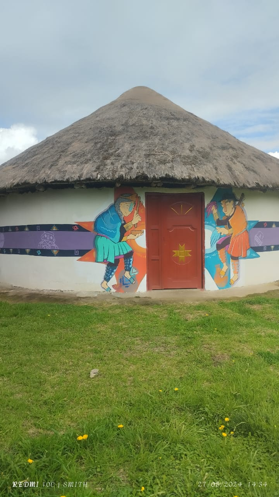
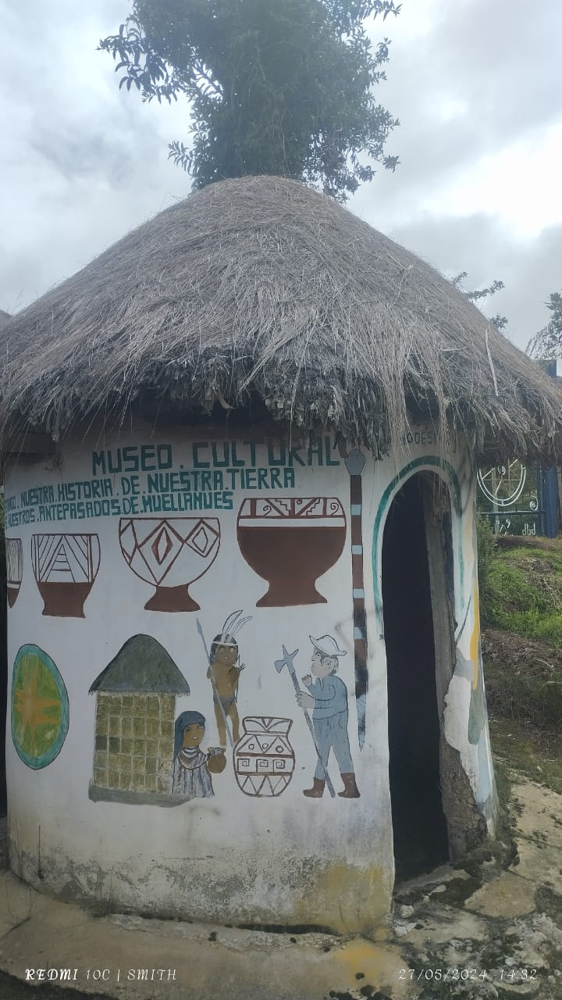
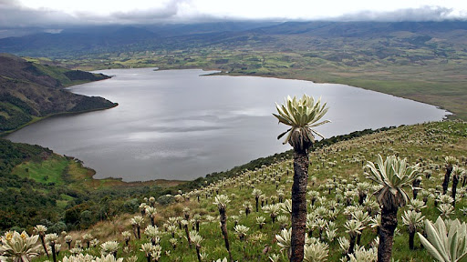
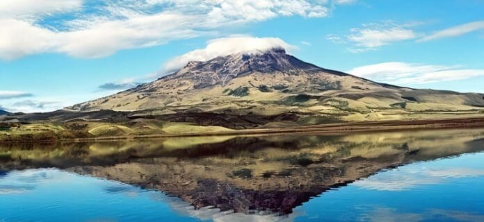
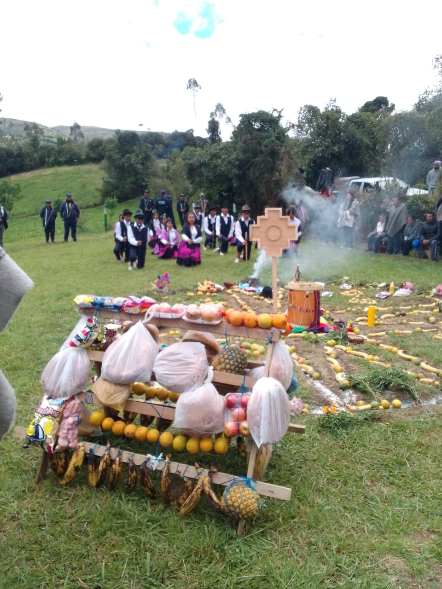
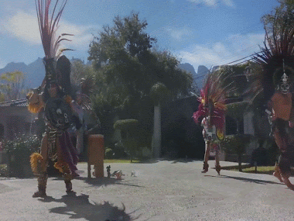

En el vasto territorio de Colombia, se encuentran diversos rincones que guardan una profunda conexión con la historia, la espiritualidad y la naturaleza. Uno de estos lugares es el Resguardo Indígena de Muellamués, un sitio sagrado que resguarda la riqueza cultural y natural de las comunidades indígenas que lo habitan.
En este recorrido por los sitios sagrados de Muellamués, nos sumergimos en un viaje a través de la historia y la cosmovisión de sus habitantes. Desde los misteriosos paisajes hasta las antiguas tradiciones, cada rincón de este resguardo nos revela la profunda relación entre el ser humano y la tierra que lo sustenta.
Resguardo Indigena
Las comunidades indígenas se caracterizan por estar organizadas dentro de resguardos, figura institucional colonial que nace por la necesidad de garantizar la mano de obra, y que por las luchas indígenas se obtuvieron derechos y empoderamiento de las tierras que inicialmente eran suyas, la conquista y explotación habían aprovechado para usufructo llevándose ganancias y riquezas, después de las luchas se devuelven las tierras Desde la asignación del estado para legalizar las tierras de los indígenas, estudiando las necesidades fue el INCORA quien se encargó de registrar y delimitar las tierras en el 2003 nace INCODER , es así como se reconocen los resguardos dentro de los aspectos legales constitucionales se define:
Resguardo indígena “una institución legal y sociopolítica de carácter especial, conformada por una o más comunidades indígenas, que con un título de propiedad colectiva goza de las garantías de la propiedad privada, poseen su territorio y se rigen para el manejo de éste y su vida interna por una organización autónoma amparada por el fuero indígena y su sistema normativo propio” (Decreto 1071 de 2015).
Al resguardo lo caracteriza la naturaleza y la abundancia de los recursos naturales, gobierno interno, autonomía, es el espacio donde se establecen relaciones sociopolíticas, culturales, económicas, religiosas de la comunidad que habita dentro del territorio y cabildo indígena, dentro de ellos también se constituyen instituciones de educación, salud, producción agropecuaria, ganadera, agrícola que se rige por pilares como derecho propio, derecho mayor, ley natural, ley de origen.
Lugares Sagrados
El resguardo indígena de Muellamués hace parte del Municipio de Guachucal, se encuentra al sur del departamento de Nariño y al suroccidente de la ciudad de Pasto. También hace parte del Nudo de la Huaca donde están los lugares sagrados como Tulpud, la Laguna la Bolsa, la Piedra de Granizo, el Morro de Coyima, el Curipollo, el Tambillo, las Escaleras de Well, La Piedra Colorada, La Peña Colorada, La Piedra de los Lobos, Apocruz, La Piedra del Chilan, La Piedra de los Tres Agujeros, La piedra de los cuatro agujeros, La Piedra de los Siete Agujeros, Cerro Mama Luisa, La Peña de los Gavilanes, La Piedra Sal, La Piedra Ancha. (Comunidad Indígena, Resguardo de Muellamués, Corporación Honorable Cabildo 2017). El resguardo indígena de Muellamués hace parte del Municipio de Guachucal, se encuentra al sur del departamento de Nariño y al suroccidente de la ciudad de Pasto. También hace parte del Nudo de la Huaca donde están los lugares sagrados como Tulpud, la Laguna la Bolsa, la Piedra de Granizo, el Morro de Coyima, el Curipollo, el Tambillo, las Escaleras de Well, La Piedra Colorada, La Peña Colorada, La Piedra de los Lobos, Apocruz, La Piedra del Chilan, La Piedra de los Tres Agujeros, La piedra de los cuatro agujeros, La Piedra de los Siete Agujeros, Cerro Mama Luisa, La Peña de los Gavilanes, La Piedra Sal, La Piedra Ancha. (Comunidad Indígena, Resguardo de Muellamués, Corporación Honorable Cabildo 2017).


Laguna la Bolsa
La laguna de Cumbal, también llamada laguna de La Bolsa,2 está ubicada en la falda del volcán Cumbal, a 3440 metros sobre el nivel del mar.1 Se sitúa a una distancia de 10 kilómetros al oriente de Cumbal, y a 22 kilómetros del municipio de Guachucal con la que se comunica por una vía carreteable.
Esta laguna se caracteriza por la coloración gris de sus aguas, la temperatura muy baja y la ausencia de oleaje, circundada por vistosas colinas y pequeñas llanuras tapizadas de pastos naturales y de la vegetación propia de los páramos. Entre la fauna característica de la región se encuentran águilas, cusumbos, venados y guaguas; mientras la flora está representada por frailejones, encenillos y cojines. En sus aguas abunda la trucha arcoíris.
La cuenca de la laguna de Cumbal es pequeña en cuanto a su extensión (9,8 km²) y se encuentra en una zona muy sensible de recarga de acuíferos. La componen dos subcuencas: la de la quebrada Cusculgo y la de la quebrada Capotes. Por medio de infiltración da origen a una intrincada red de manantiales y ojos de agua. El río Cuacé nace a 3425 metros sobre el nivel del mar, como resultado de la infiltración de la laguna de Cumbal.


Marco Simbolico
Ninguna cultura puede escapar del mito (Niño, 2015) según la naturaleza y el
conocimiento de los pueblos indígenas hace pensar cual es el origen o creación del mundo, el
mito construye el paisaje y la organización social, la celebración del rito es el legado del
conocimiento las cuales hacen una intervención a la tierra con sus materiales primos; entonces
el objetivo del arquitecto como intérprete de estas comunidades es el de retomar sus
principios y crear una nueva arquitectura con los conceptos transmitidos pero ahora ya
olvidados por la vida occidental.
El origen del pueblo indígena de los Pastos se da por dos viejas indias las cuales eran
perdices, una era negra y la otra era blanca; la perdiz negra venia del norte-occidente y
representa las cualidades del poder del abajo como lo son la tierra, el fuego, el oro, las
riquezas y el mundo de los muertos, por otro lado la perdiz blanca viene del sur-oriente y
posee cualidades del poder de arriba, la luz, la agricultura, el sol, el viento y la vida; estas
perdices venían en busca de recrear el mundo.
Las montañas como lugares sagrados para la comunidad, representando en el Volcán
Colimba como lo más alto seguido del sol de los Pastos, aquellos puntos fundamentales como
colectivo representados la familia, la salud, la comunidad y los amigos haciendo parte de la
riqueza del saber y el placer de la comunidad. La relación del entorno natural con las
comunidades indígenas tomando la tierra como espacio sagrado y dando su asentamiento a
partir de los movimientos fluctuantes de la misma y así representando el mundo y su forma de
verlo en la arquitectura (Gros, 1991)
La naturaleza según los principios de creación son territorios vivientes, los espíritus de las
plantas y los depredadores o animales son aliados de las comunidades indígenas ya que por
estas se asientan en un lugar así como la comunidad indígena de Muellamués, la cual por la
danza de las perdices se forma un nudo y en este punto empiezan a construir su sociedad; la
mitología se presenta con exuberancia, libertad expresiva y la narrativa que comprende la
variedad de la vida natural. (Gvazzi, 1980)
Fiestas Tradicionales


Conclusión
Al explorar los lugares sagrados del Resguardo Indígena de Muellamués, no solo hemos descubierto la belleza natural de sus paisajes, sino también la importancia de preservar y respetar las tradiciones ancestrales de las comunidades indígenas. Estos sitios no solo son testimonios de un pasado rico en historia y espiritualidad, sino también son faros de esperanza para un futuro en el que la armonía entre el ser humano y la naturaleza sea una prioridad.
En cada paso dado en este viaje, hemos sido testigos de la majestuosidad y la grandeza de la Madre Tierra, así como de la sabiduría y la perseverancia de aquellos que la han habitado durante siglos. Que este recorrido nos inspire a cuidar y proteger estos tesoros naturales y culturales para las generaciones venideras.